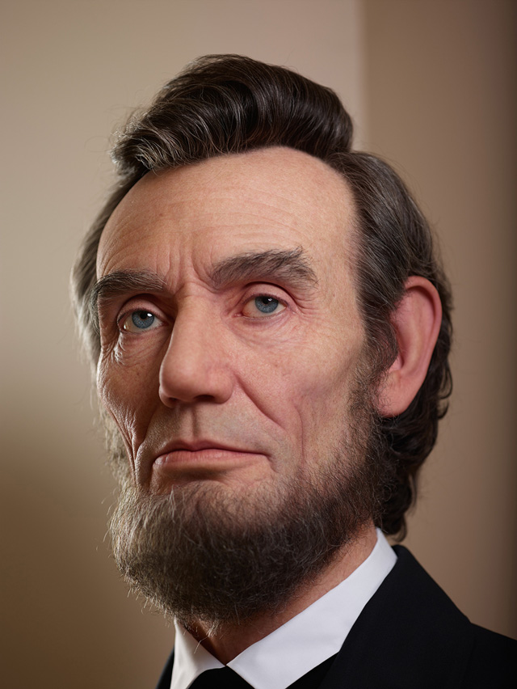
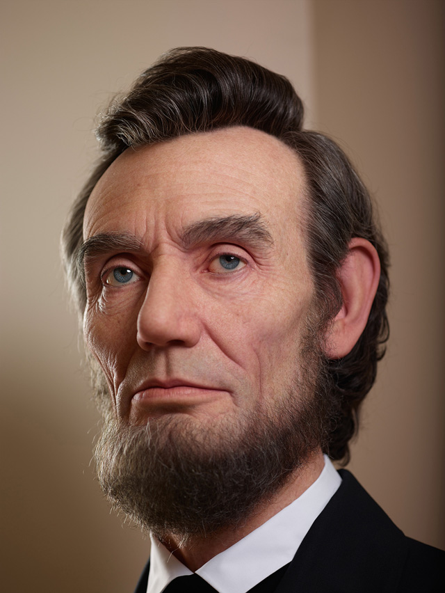

dienà. Prieð jo iðrinkimà pirmuoju prezidentu nuo respublikonø partijos 1860 m., A. Linkolnas dirbo teisininku, Ilinojaus ástatymø leidëju. Taip pat Linkolnas buvo iðrinktas á JAV atstovø rûmus, dukart nesëkmingai bandë patekti á JAV Senatà. Linkolnas atvirai pasisakë prieð vergijos plitimà Jungtinëse Amerikos Valstijoje. 1860 m. Respublikonø partija Linkolnà iðkëlë kandidatu á JAV prezidento postà. Abraomas Linkolnas laimëjo po metø vykusius rinkimus. Jo kadencija, visø pirma, pasiþymëjo separatistinës Pietiniø valstijø konfederacijos sutriuðkinimu JAV pilietiniame kare. Linkolnas ádiegë priemones, kurios vëliau lëmë vergijos uþdraudimà, Iðlaisvinimo akto paskelbimà 1863 m. Taip pat Linkolnas pasiûlë priimti 13-àjà JAV konstitucijos pataisà. Kongresas patvirtino pataisà dar prieð Linkolno mirtá. Linkolnas meistriðkai vadovavo sàjunginëms pajëgoms pergale pasibaigusiame pilietiniame kare, atidþiai rinkdamasis vadovaujanèius generolus, tarp jø ir Ulisà Grantà. Istorikai padarë iðvadà, kad Abraomas Linkolnas gerai susitvarkë su vidinëmis respublikonø partijos problemomis, suburdamas susidariusiø frakcijø lyderius ir priversdamas juos bendradarbiauti. Linkolnas suðvelnino Trento skandalà, tiesioginio karo su Britanija grësmæ, 1861 m. Pilietinio karo pradþioje, vadovaujant Linkolnui, ðiauriniø valstijø sàjunga perëmë vergoviniø pietiniø valstijø, esanèiø pasienyje su ðiaurinëmis valstijomis, kontrolæ. 1864 m. prezidento rinkimuose Linkolnas pats vadovavo savajai rinkimø kampanijai. Karo prieðininkai kritikavo Linkolnà uþ jo atsisakymà siekti kompromiso vergijos klausimu. Tuo tarpu, radikalieji respublikonai, abolicionistinë respublikonø partijos frakcija, kritikavo Linkolnà uþ per lëtà vergijos panaikinimo siekimà. Nepaisant kritikos, Linkolnas sugebëjo iðsaugoti savo populiarumà tarp amerikieèiø. Jo populiarumà labiausiai skatino kalbos: jo kalba pasakyta Getisberge, yra vienas ið geriausiø to pavyzdþiø. Linkolnas laikësi nuosaikios politikos sàjungos atkûrimo atþvilgiu, siekdamas greitai suvienyti tautà ir vykdydamas susitaikymo politikà. Linkolno ápëdinis Endriu Dþonsonas taip pat laikësi susitaikymo politikos, taèiau tik baltøjø amerikieèiø atþvilgiu, nes jam nepavyko uþtikrinti iðlaisvintø vergø teisiø apsaugos.tø. Ðiektiek ádomiø faktø apie Linkolnà: Abraomà Linkolnà uþsiauginti barzdà ákvëpë vienuolikmetës mergaitës laiðkas, kuriame ji raðo, kad tada A. Linkolnas bûtø vienintelis prezidentas su barzda. Abraomas Linkolnas buvo aukðèiausias Jungtiniø Valstijø prezidentas. Jo ûgis – net 193 cm. Mokyklà A. Linkolnas lankë tik 18 mënesiø. Paskui lavinosi pats, labai daug skaitë. Prezidentas sirgo stipria depresija, nors bièiuliams ir ðeimos nariams daþnai pasakodavo anekdotus ir juokingas istorijas. Abraomas Linkolnas mokslininkø ir istorikø yra laikomas vienu ið paèiø geriausiø JAV prezidentø.
 
